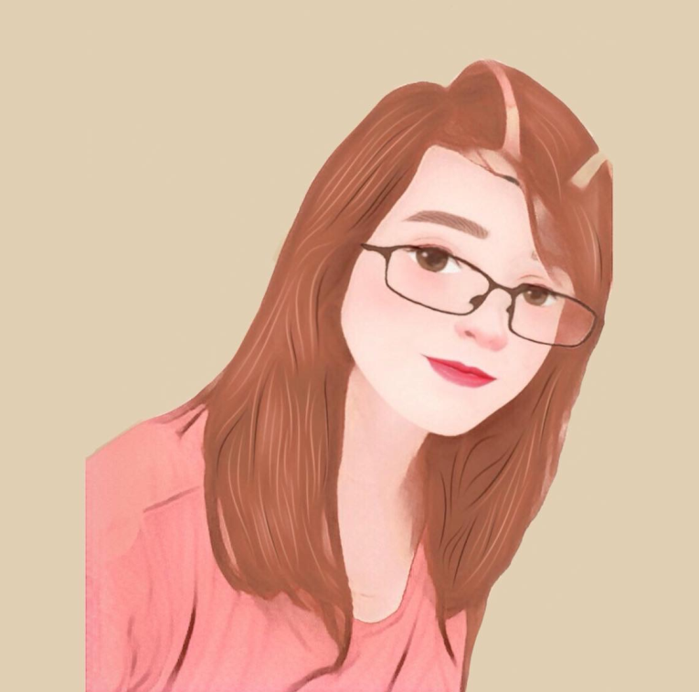

During my free time, I allow myself to watch anime. I admire the efforts exerted by the animators in each anime. I also dreamt to be an animator few years ago but I think, it's not meant for me, lol.
Playing sports isn't my hobby at all. But as years go by, I got interested in playing it. I started playing table tennis during my elementary grade and recently, I played it again after how many years during PSU Intramural 2019. Volleyball, on the other hand, is a sport I didn't itended to be my favorite. I just started playing it during Grade 9, because I was inspired by an Atenean libero, Mrs. Dennise Michelle Lazaro-Revilla. And as of today, improving on this sport is my goal.
Art has been my therapy for amost 4 years. Everytime I got attacked by anxiety and depression, it is my kind of therapy. I don't have the natural talent to be honest, but thru my eagerness to learn, I already drawn portraits but dur to my laziness, I seldom do portraits, just quick sketches of random people (all artist has this attitude, so don't judge me lol). I was first into graphite pencil medium but I got interested in digital art. Some of my artworks are on the Art Album :>.
I am fond of capturing sceneries. I do edits but i don't like to be photgraphed like lol, I am not photogenic. *evil laugh